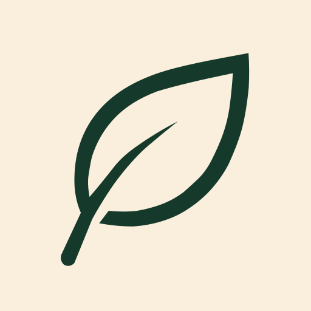
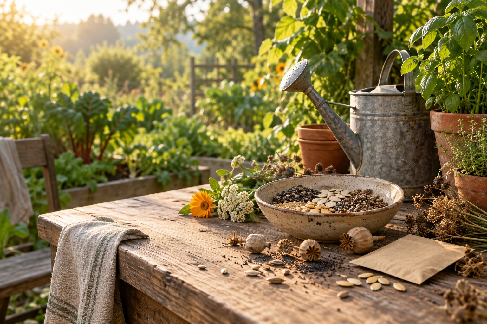
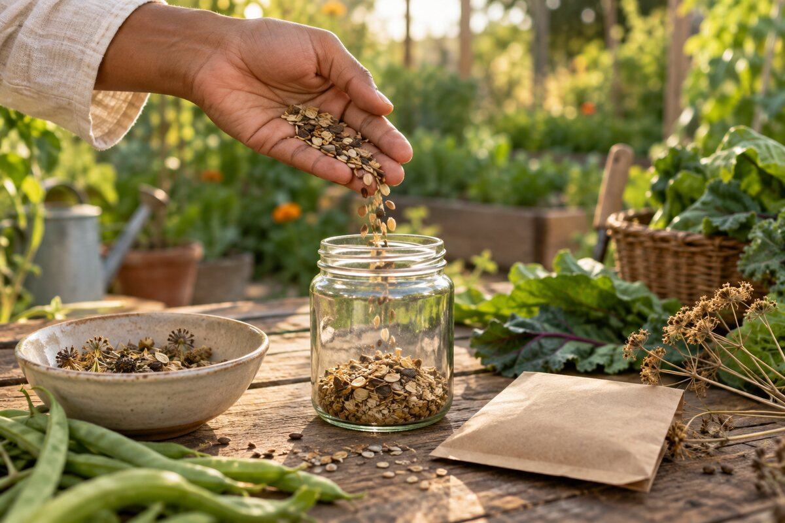

recommendations · Change in Settings
Rethink Waste.
Reconnect
with Earth.
Use what you already have first.

ZerraUse what you already have first.

Welcome to Zerra
Zerra connects everyday choices with Mother Earth, other living beings, our communities, and the consequences of what we do. Start with what would help you now. You can change it anytime.
One principle comes first: use what you already have before buying something new.
Choose the practical approach that fits your circumstances.
The responsibility to care is shared. The methods can differ by access, housing, health, time, and resources.
recommendations · Change in Settings
Use what you already have first.
The Life Framework
LIFE is Zerra’s ethical lens for rebuilding a conscious relationship with Mother Earth, other living beings, communities, belongings, food, and self. The four values work together; none is a score, purity test, or excuse to ignore health, safety, accessibility, or material reality.
Ask
In practice
The LIFE Framework and Zerra’s four responsibilities are Michael’s creator framework. Zerra does not attribute them to the Hopi or broadly to Indigenous peoples without specific, reliable evidence.

Today
Continue Your Journey
Keep building skills through Explore and Challenges.
Recommended for your path
History, ethics, and the danger of familiarity
A practice being legal, traditional, profitable, familiar, or socially accepted does not by itself establish that the practice is ethical.
The victims, histories, circumstances, and forms of suffering are different. The comparison concerns a recurring social mechanism: people can become accustomed to harmful systems and build language, institutions, laws, habits, and economic interests around them.
History contains practices defended or tolerated within their societies and later condemned, restricted, or abolished. Their familiarity did not make them defensible.
Enslavement
Enslavement was embedded in law and major economic systems for generations. Historical acceptance did not make ownership of human beings morally defensible.
Library of Congress ↗Child labor
Industrial child labor placed children in factories, mills, mines, and street work. Reform came despite defenses involving income, industry, and established practice.
Library of Congress ↗Forced assimilation
Federal Indian boarding schools separated Native children from families and sought to suppress languages, religions, names, clothing, and cultural practices.
National Park Service ↗Human experimentation
The U.S. Public Health Service study at Tuskegee continued without informed consent and without appropriate treatment even after effective treatment was available.
National Library of Medicine ↗No single mechanism explains every case, but the same kinds of defenses appear repeatedly.
“We have always done it.”
“It is allowed, therefore it is acceptable.”
“Jobs and livelihoods depend on it.”
The harmed person, animal, community, or ecosystem becomes invisible to the beneficiary.
Technical or commercial words can make physical realities easier to ignore.
Responsibility can be distributed until nobody feels accountable for the whole system.
The lesson is not that every accepted practice is secretly evil. It is that acceptance alone cannot settle the moral question.
Who or what bears the harm, and are tradition, convenience, price, legality, or profit sufficient reasons to continue it when realistic alternatives exist?
Ask this of disposable consumption, planned obsolescence, extraction, pollution, exploitative labor, animal use, and the ways costs are shifted onto communities, future generations, and Mother Earth.
Reconnect
Waste begins long before a bin. Reconnect explores origins, dependence, responsibility, reciprocity, enoughness, place, and the movement from doing less harm toward restoring what sustains life.
Attribution: The Life Framework and four responsibilities are Michael’s creator framework. Zerra does not label them as Hopi or broadly Indigenous teachings without specific, reliable evidence.
Stored only in this browser with your other Zerra data.
Put it into practice
When a subject centers animals, animal-derived foods, or materials, Go Vegan explores the living beings and plant-based alternatives behind it.
Open Go Vegan ↗The four responsibilities
Food, Seeds & Soil
A seed is not automatically food, viable planting stock, or appropriate for the place where you live. Start with the plant, its source, and your circumstances—then choose a respectful path.
Living-cycle answer
General education only. Variety packets, Cooperative Extension, health guidance, and current local rules take priority for a specific seed, place, or person.
Return nutrients
Usually fits:
Limits:
Official guidance ↗Give Back & Restore
Discover
Find practical guidance while learning where things come from, what sustains them, what happens after use, and how you can return or give back.
Showing:
useful starter entries
Try a broader search or clear one of the filters.
Flagship tool
Before recycling or throwing something away, look for a higher-value option. Zerra follows the waste hierarchy and only shows choices that make sense for the item.
Best available options
Local requirements vary. Check your local waste, recycling, composting, or household hazardous-waste program before setting the item out.
Try a broader term. When local rules matter, Zerra will say so rather than inventing a disposal instruction.
Practice
Your path changes which steps Zerra recommends first. Completing Journey steps grows your Living Earth; it does not count as environmental impact.
Why zero waste?
Everything we extract, manufacture, consume, and discard goes somewhere. Zerra makes the scale visible — then connects it to actions that keep resources in use longer.
Follow the waste
A discarded object does not disappear. Its story continues through collection, sorting, reuse, recycling, combustion, landfill, or leakage into the environment.
Useful, but not prevention. For global plastic waste in 2019, only 9% was ultimately recycled.
Almost 50% of global plastic waste in 2019 went to sanitary landfills. The material was moved, not erased.
19% of global plastic waste in 2019 was incinerated. Burning changes the material and can recover energy, but it is still an end-of-life pathway.
22% was mismanaged, openly burned, dumped, or leaked. UNEP estimates 19–23 million tonnes of plastic leak into aquatic ecosystems each year.
Imagine 100 units of global plastic waste in 2019. OECD's reported shares are shown above; rounding means totals are approximate.
The impact starts before the trash
The materials in our food, homes, clothing, electronics and packaging have to come from somewhere. UNEP reports that global resource use rose from about 30 billion tonnes in 1970 to 106 billion tonnes, and that extraction and processing account for more than 60% of planet-warming emissions.
Wildlife & ecosystems
Plastic pollution does not stay neatly inside human systems. UNEP documents ingestion and entanglement among marine species, disruption of food chains, and damage to habitats. Larger plastics also fragment into smaller particles that persist and move through the environment.
The connection
Street → stormwater → stream → river → ocean → habitat. “Away” can become another living being's environment.
Waste is also climate waste
Land, water, energy, labor, transport and refrigeration can all be embodied in food that is never eaten. UNEP estimates food loss and waste are responsible for 8–10% of global greenhouse-gas emissions.
What prevention changes
Plan around food you already have. Store it well. Use leftovers. Freeze or preserve surplus. Share edible excess. Compost unavoidable scraps after prevention.
Science without exaggeration
We know
Plastic persists, fragments into microplastics, moves through ecosystems, and can harm wildlife through ingestion and entanglement.
We're still learning
The long-term health consequences of different human microplastic exposures, particle sizes, polymers and doses are still being studied. Zerra will not turn detection into a medical claim.
From impact to action
Zero waste is not about being perfect. It is about changing the order of decisions: prevent what you can, keep what already exists useful, and manage the remainder responsibly.
Start upstream
EPA's materials hierarchy puts source reduction and reuse ahead of recycling. Zerra turns that principle into everyday choices: use less, keep materials useful longer, then recover what remains.
Turn the numbers into choices
Plan around what you have → store it well → use leftovers → freeze or preserve surplus → share edible excess → compost unavoidable scraps.
Wear longer → care for it → mend or alter → swap or donate usable pieces → buy secondhand when something is truly needed.
Maintain → repair → upgrade when practical → reuse or resell → use proper e-waste collection when the device reaches end of life.
Use what you already own → refuse unnecessary single-use items → refill and reuse → recycle correctly when prevention is no longer possible.
Before you buy
Replacing a safe, functional thing simply because a greener-looking version exists can create unnecessary waste. Start with what is already in your hands.
Do I already own something that works?
Can I repair what I have?
Can I borrow, share, rent, or find it used?
If I truly need it, can I choose durable and repairable?
Start where you are
Your individual choices do not erase a global system, but they can reduce demand, extend material life, build practical skills, and make prevention normal. Zerra is here to help with the next decision.
Why recycling comes later
Recycling matters, but Zerra starts upstream. If an unnecessary product is never demanded, or an existing object stays useful longer, fewer new resources are required and there is less material to manage at the end.
Evidence ledger
The Impact story separates reported figures from Zerra's mathematical translations. Every headline figure names its year and links to the underlying institution. Photo credits link back to their source pages.
The point is not perfection
Use what you already have. Refuse unnecessary demand. Reduce. Reuse. Repair. Repurpose. Share. Compost. Recycle. Dispose responsibly.
My Path
Your path records real actions without turning them into invented environmental numbers or a moral score.
Zerra intentionally does not convert your actions into kilograms of waste avoided, CO₂, water, money, or other scientific metrics without a defensible methodology.
Reflections
Reflections saved from Reconnect modules will appear here without scores or streaks.
When you refuse, reuse, repair, compost, buy secondhand, or take another real action, record it here.
Search Zerra
Start with an item, material, food, remainder, need, action, or household question. Zerra will favor continued use, care, repair, sharing, and return before replacement.
Connected knowledge
No connected result yet
Try fewer words or a simpler object, material, food, or action.
Showing items that have alternatives matching your selected preference. No search query is required.
Try a simpler item, material, use, or alternative name.
Browse by area of everyday life
Before buying anything new, consider whether your current item can still serve its purpose, be repaired, or be repurposed. These alternatives are for when replacement is genuinely necessary.
Try adjusting your filters or priority.
Try a different term or browse by area.
Discover
Explore alternatives before something needs replacing.
Also see: What do I do with this?
If you already have an item and want to find its best next use or responsible end-of-life option.
Saved
Guides, Journey steps, disposal information, swaps, challenges, and projects you want to revisit.
Save practical guides, Journey steps, challenges, swaps, or disposal information so you can return to them later.
Challenge